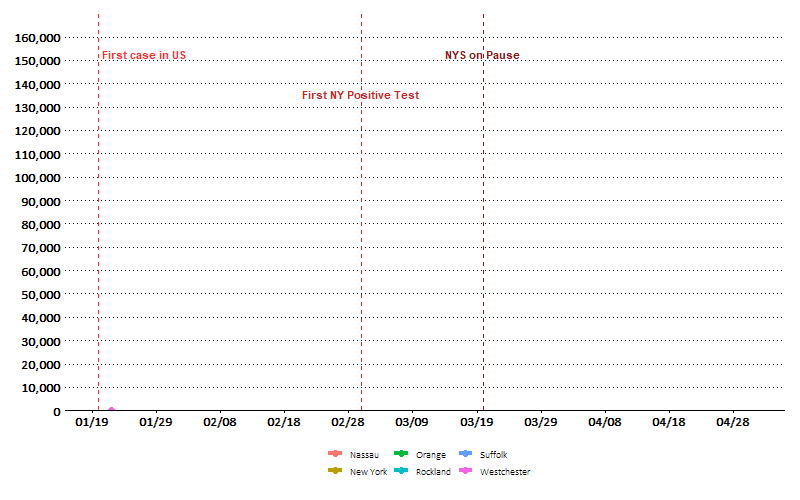

Downstate New York
In absolute terms, New York City cases have well outpaced the rest of downstate New York:

The NYS on Pause measure appears to have been effective at slowing the growth rate of the virus, illustrated by a bending curve when viewing the same data on a log scale.